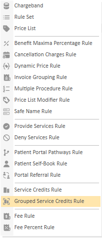
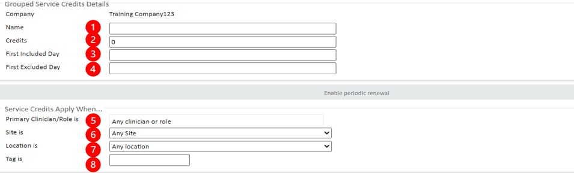

The Grouped Service Credits rule allows patients to book a combination of different appointment types within their session package while still adhering to the overall session limits.
With grouped service credits, a patient could, for example, book:
5 sessions from any of the available appointment types
A mix of 3 sessions from one type, 1 from another, and 1 from a third type
Or any other flexible combination of appointment types, as long as the total number of sessions matches their package allocation.
This approach provides the flexibility needed while maintaining control over billing and session usage within the predefined package limits.
This article will explain the features of the Grouped Service Credits rule, how to configure and enable this enable.
To begin the process of configuring the Fee rule. Go to Admin > Billing rules:

When creating a Grouped Service Credit Rule, you must first choose a Credit Type to decide how credits should be applied. There are 2 types:
Fixed Amount of Credits:
For example, a patient is given 5 free Physiotherapy Sessions per year. Once all 5 are used, they cannot book another free session until the year resets.
*Minimum Booking Interval:
For example, a patient books a Health Assessment in March 2025. Their next eligible booking is from March 2026. If they do not book in March 2026, the credit remains available until they use it.

Grouped Service Credits Details:
1. Name - Set the name of the Grouped Service Credit rule. If this is left empty, the default name will be "Grouped Service Credit rule".
2. Credits- Set the overall number of appointments you would like to offer.
3. First Included Day - The first date you would like this rule to apply.
4. First Excluded Day - The first date that you would like the rule to not apply.
Service Credits Apply when:
5. Primary Clinician/Role - Assign a clinician or role group for the rule to apply to.
6. Site - Assign a site for the rule to apply to.
7. Location - Assign a location for the rule to apply to.
8. Tag - Assign a tag for the rule to apply to.
Services to Credit:
Services to Credit is where you set Appointments and Services you wish to be included in this group. To select the Appointments and Services.
1. Click "+Add"
2. Select the Appointments and Services you wish to include.
This billing rule will automatically save.
Your chamber may have alternative services and therefore may not have the same shown in the image below.
This is available for all appointment and service types.
Once you have created your Grouped Service Credits rule, you must add it to the appropriate Charge Band.
The order of the rules on the Charge Band is important, so it is best practice to put the Grouped Service Credits above any Price Lists.